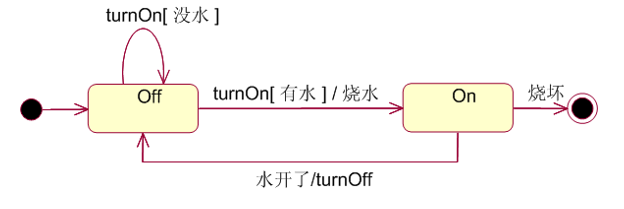
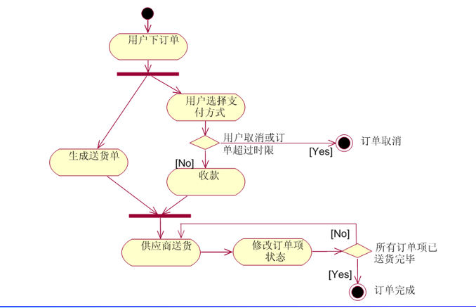

状态图（Statechart diagram）
用于描述一个对象在其生存周期间的动态行为，表现一个对象所经历的状态序列，引起状态转移的事件（event），以及因状态转移而伴随的动作（action）。
核心元素
1.圆角矩形表示状态
2.状态之间包含文字描述的有向箭头线。

转换要素
1.源状态：受转换影响的状态。
2.目标状态：转换完成后的对象状态。
3.触发事件：用来为转换定义一个事件，包括调用，改变，信号和时间。
4.监护条件：布尔表达式，决定是否激活转换。
5.动作：转换激活时的操作。
转换的区别
- 进入和退出转换：进入一个状态时，执行某个动作；推出某个状态时，执行某个动作。
- 内部转换：处理一些不离开该状态的事件。
活动与延迟事件
活动：对象处于一个状态时，一般是空闲的，在等待一个事件发生，但是某些时间，要描述正在进行的活动。在处于一个状态的同时，对象做着工作，一直持续到被某个事件中断。
延迟事件：延迟事件是一种特殊的事件，指该事件不会触发状态的转换，当对象处于该状态时不会丢失。
活动图
描述系统行为的模型视图，，用来描述过程中的活动及迁移。
状态图用来表示单个对象的行为和状态，活动图是建模不同区域的工作如何彼此交互。
主要作用
1.描述用例的行为
2.理解工作流程
3.描述复杂过程的算法

主要元素
- 初始节点和活动终点：实心圆表示初始节点，实心圆加圆圈表示活动终点
- 活动节点：主要元素，表示一个活动
- 转换：一个活动结束时，控制流会马上传递给下一个活动节点，带箭头直线表示
- 分支与监护条件：分支用菱形表示，有一个进入转换，一个或多个离开转换。每个箭头有一个监护条件，表示满足什么条件时执行转换。
- 分岔与会和


最后更新： 2018年06月02日 16:37